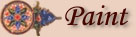

|
 Brother Remy mixes his paints from animal, vegetable, and mineral substances according to his own carefully guarded recipes. Some ingredients come from far away. The finest blue color is made from the gem lapis lazuli, found only in a distant part of Asia. |